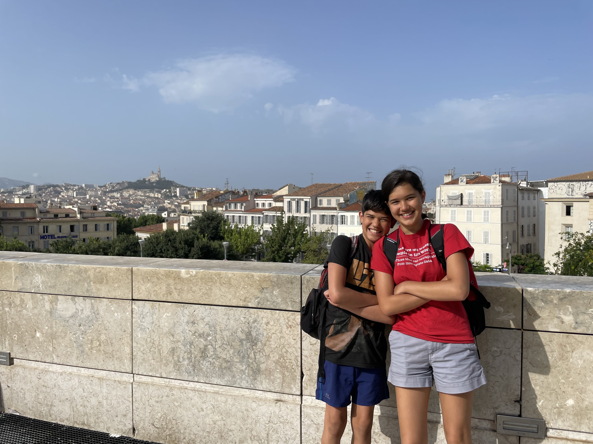

ABOUT ME
Hello! My name is Maya Peski. I am 16 years old, and currently a grade 11 student at William Lyon Mackenzie Collegiate Institute. I was born in Texas, I grew up in Canada, and I've had the chance to travel a lot for someone my age. Notably, I've lived a year in Paris, and I spent my 2024 summer in Europe to perfect my skills in French, German, and Polish.
My hobbies include reading, listening to and playing music, and learning. I can play violin and guitar, and am in a band with a couple of my friends, where we are working on original compositions. I can also speak French fluently and can hold a conversation in German.
A PROPOS DE MOI
Bonjour ! Je m'appelle Maya Peski. J'ai 16 ans, et je suis actuellement en grade 11 à William Lyon Mackenzie Collegiate Institute. Je suis née au Texas, j'ai grandi au Canada, et j'ai eu la chance de beaucoup voyager pour quelqu'un de mon âge. Notamment, j'ai vécu un an a Paris, et j'ai passé mon été 2024 en Europe pour perfectionner mes compétences linguistiques en francais, allemand, et polonais.
À mes heures perdues, je lis, j'ecoute et je joue de la musique, et j'aime apprendre de nouvelles choses. Je joue du violon et de la guitare, et je joue dans un groupe avec des amies. Nous travaillons sur des compositions originales. Je parle couramment francais et je peux tenir une conversation en allemand.

My brother (to the left) and me during a trip in Marseilles, France
Mon frere (à gauche) et moi lors d'un voyage en Marseilles, France